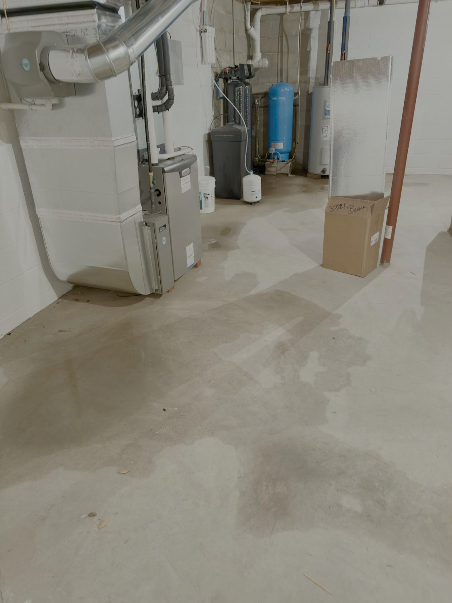
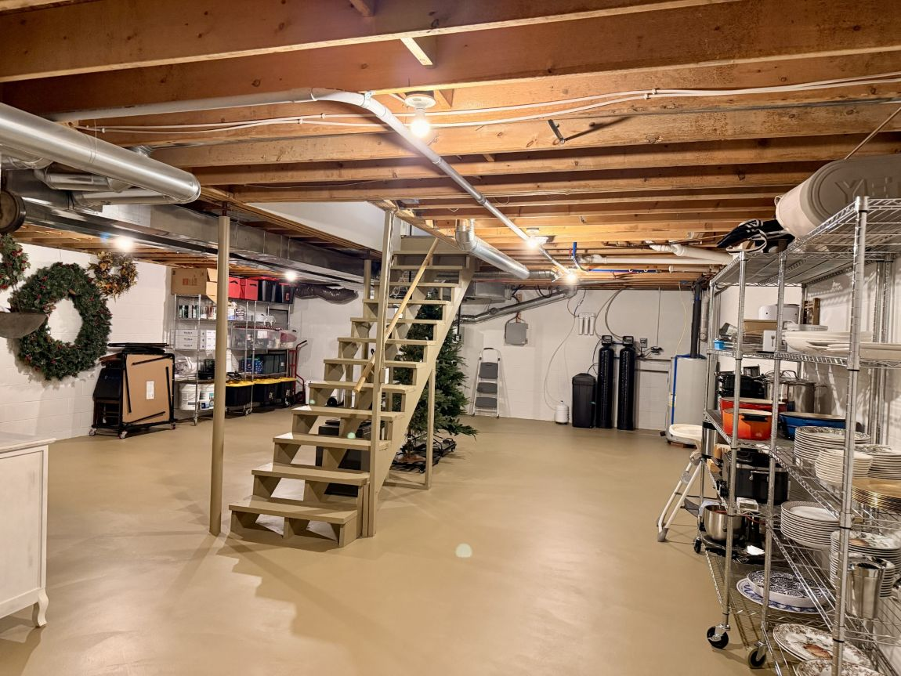

Every home has its own internal soundtrack. For twenty-six years, the rhythm of this house included a low, exhausting, and permanent mechanical background noise: the constant hum of a dehumidifier running twenty-four hours a day, seven days a week, trying to keep up with a damp, musty subterranean footprint. It was a chore that felt endless, a repetitive baseline that whispered of structural limitations rather than possibilities.
Living intentionally means looking closely at the spaces that support us, especially the parts hidden beneath our daily paths. The basement had long been relegated to an unusable storage zone—a forgotten room where moisture seeped in through the porous masonry, pooling in a particularly stubborn corner whenever the Pennsylvania skies opened up.

To build a life rooted in stewardship, sometimes you have to roll up your sleeves and address the literal foundation of your landscape. Before a space can hold new dreams, it must first be made sound, clean, and dry.
The Grit of Maintenance
The work began in the dark corners where the water held its ground. Reclaiming this space required moving past temporary fixes and leaning into industrial patience. We started by attacking that stubborn leaking point directly, packing it tight with a specialized heavy-duty cement product designed to bind permanently with old concrete and seal off active hydraulic pressure.
Once the breaches were plugged, the walls required an intensive, total seal. Coat by coat, we applied specialized masonry waterproofing to the interior brickwork, working the thick compound deep into every pit, line, and groove of the stone. Then came December, a quiet, cold month that brought the perfect opportunity to complete the floor. We wrapped up the project by completely coating the slab with dedicated, heavy-durability protective paint.

A Silent Canvas
When the final coat cured, an incredible thing happened. The air cleared. The musty scent vanished. And for the first time in over a quarter-century of this property’s history, the mechanical roar of the dehumidifier finally went silent.
The silence down there is profound now. The space has transformed from an avoided, damp locker into an entirely new level of our home—a massive, raw footprint ready for future phases of life.
Right now, it is a beautifully quiet, clean gray box. But when you are standing on a dry floor, your mind is free to wander. We’ve already begun sketching out visions for what this foundation will eventually support: a dedicated wine cellar built to house bottles collected over years of travel, a cozy game room for family gatherings, and perhaps a second kitchen or scullery optimized as a filming workshop where we can share live *Thistle & Cypress* demos.
Reclaiming a house isn’t just about the spaces everyone sees; it’s about honoring the bones of the place. By taking the time to dry out the foundation, we haven't just won a battle against moisture—we have opened the door to the next twenty-six years of creative life.